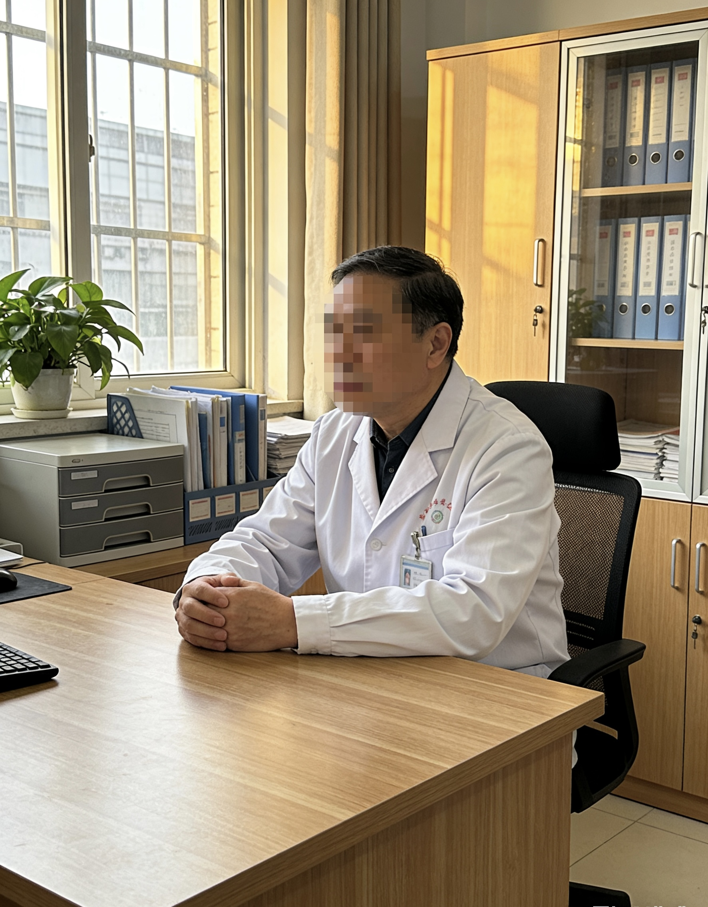

姓名
林国栋
职称
主任医师、院长
从业年限
30年
尊敬的各位家属、朋友们：
欢迎来到青山疗养院。
我是院长林国栋，从事医疗工作已有三十余载。三十年来，我见证了无数生命的奇迹，也深深理解生命的可贵与脆弱。
青山疗养院成立于1985年，这十几年来，我们始终坚持"科技兴院、人才强院"的发展战略，不断引进国内外先进的医疗技术和设备。
我们特别重视老年医学和康复治疗领域的研究，与多家知名医疗机构建立了合作关系，致力于为每一位患者提供最优质的医疗服务。
生命是宝贵的，每一个生命都值得被尊重和呵护。这是我一直以来的信念，也是青山疗养院全体医护人员的共同追求。
再次感谢您的信任，让我们携手，为生命保驾护航。
林国栋
1998年3月